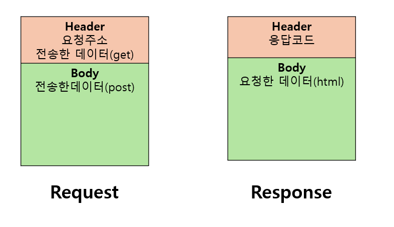

http의 4가지 특징에 대해 설명하시오
- connectionless : 통신시 연결을 유지하지 않고, 데이터를 주고 받음. 한 번 요청하고 한 번 응답
- stateless : 요청마다 독립적인 트랜잭션으로 취급하여 이전 연결했던 작업을 그대로 사용할 수 있음
- request : 서비스를 요청한 클라이언트에 관한 정보를 가지고 있음. 서버안에서는 전달함
- response: 서비스 응답하는 정보를 가지고 있음. http로 전달할 대상으로 만드는 역할
